Introduction to p5.js
Navigating a basic maze
Lessons learned using p5
Created by Michael C. Zakany / @mzakany
Phaser.io
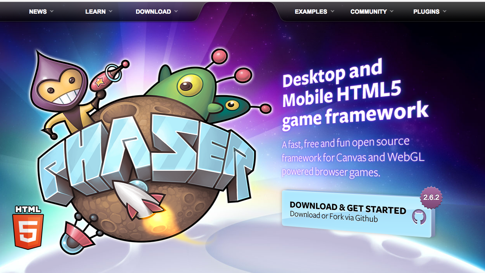Easeljs
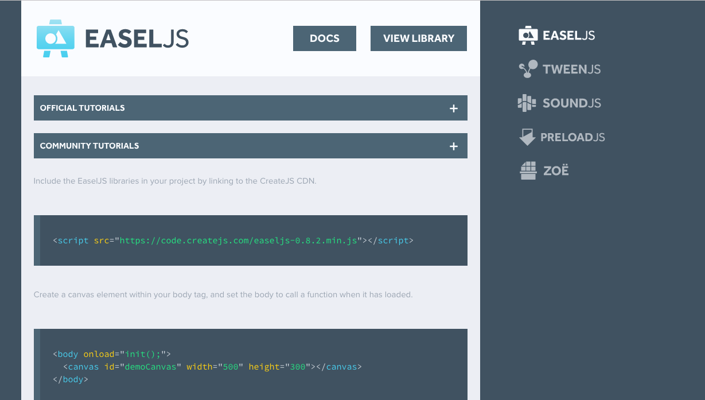Easeljs Adds
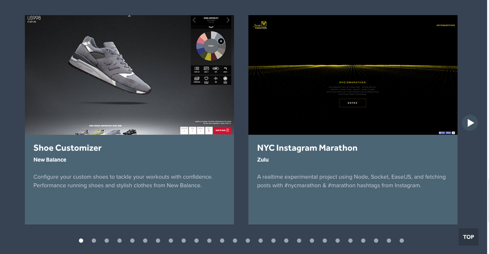p5.js
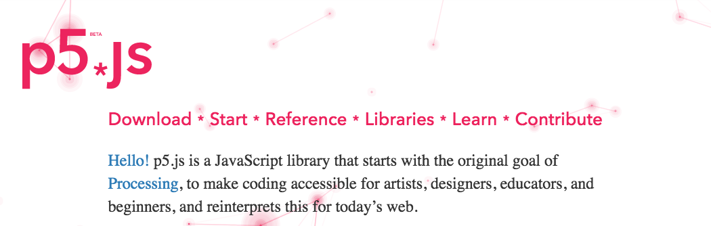
"p5.js was created by Lauren Mccarthy and is developed by a community of collaborators, with support from the Processing Foundation and NYU ITP."
Documentation

P5 Weekend Journey:
(A+B+C+D)/4==Selleck-Maze
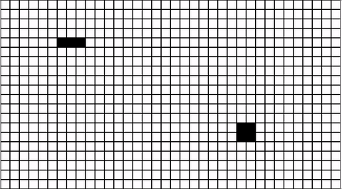 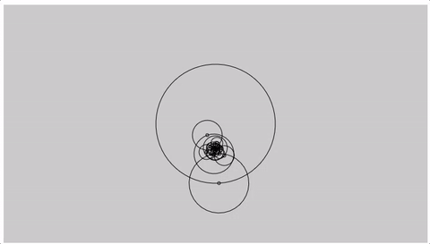 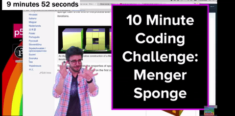

Daniel Shiffman: Coding for Rainbows

Maze Generator
https://www.youtube.com/watch?v=HyK_Q5rrcr4
Selleck Maze Waterfall
https://maze-gen.firebaseapp.com/

Constructing a maze
Project Guidlines
- Make a matrix (2D Array) n*n
- Each postion matrix[n] will be an instance of cell class
- Maze class will handle drawing matrix based on rules
- Game class handles game rules and player turns
- Player class will know how to traverse the maze
- UI class handles dom updating with vanilla js (no jquery)
- Index is where globals live and init code is ran
Grid:make grid

Wikipedia: Recursive Backtracker
Grid:neighbors
cell.getNeighbors()

Grid:line checking

Grid:make grid
1d array
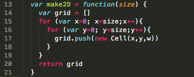 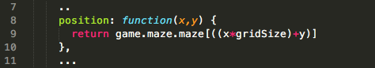Grid:make grid
2d array

Grid:neighbors
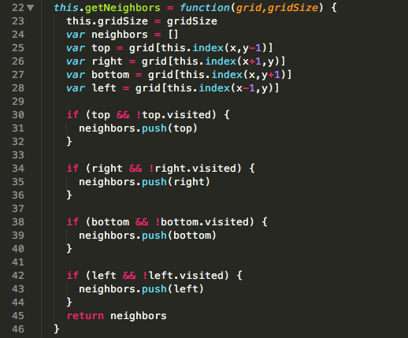Grid:line checking
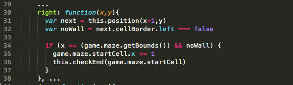Globals vs Instance Mode:
P5:Instance Mode & Images
UI class
Events

Next Steps?
- refactor ui to react or riot js
- webpack or rollup and es6
- encapsulate globals
- develop points system i.e. min moves / ui
- make grid bigger
Demo